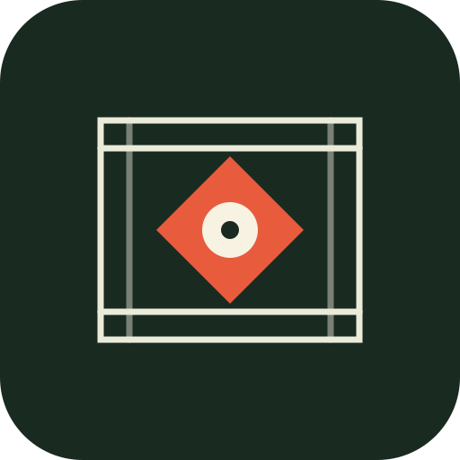

장소 후보 목록
0곳장소자료를 불러오는 중입니다.
장소 정보 · 이미지 연구
장소를 선택하세요장소를 선택하면 대표사진 변경과 지도·촬영 정보를 확인할 수 있습니다.

FRAME ATLAS 2.0 FIELD NOTES · LOCATION SCOUT건축의 선과 빛, 오래된 거리의 질감, 자연이 만드는 여백까지.
촬영을 위한 장소와 실제 공간의 사진을 한곳에 모았습니다.
추천순으로 정렬된 모든 등록 장소입니다. 관광 순위가 아니라 사진의 구도와 공간적 개성을 기준으로 선별했습니다.
추천 장소 외의 등록 장소도 사진을 보고 바로 열어볼 수 있습니다.
LOCATION ARCHIVE / FIELD SCOUTING
실제 장소 사진과 촬영 관점의 정보를 살펴보고, 가장 적합한 사진을 직접 선택하세요.
PHOTO LOCATION SCOUT
좋은 장소는,
좋은 사진을 만듭니다.
서울·경기·인천의 공간을 사진가의 시선으로 탐색하고, 촬영 참고사진과 장소 정보를 기록하세요.
EXPLORE / NAVIGATION
장소를 선택하면 해당 장소의 지도 검색으로 이동합니다.
PHOTO CANDIDATES / REVIEW
장소별 사진을 비교하고, 실제 장소와 맞는 사진을 대표사진으로 지정하세요.
SCOUTING SCORE / ANALYSIS
관광 인지도가 아니라 조형성·구도·빛·에디토리얼 활용도를 기준으로 비교합니다.
YOUR FIELD ATLAS
사진으로 만나는 특별한 공간
LIBRARY / SETTINGS
저장한 장소, 사진 후보와 백업을 관리합니다.